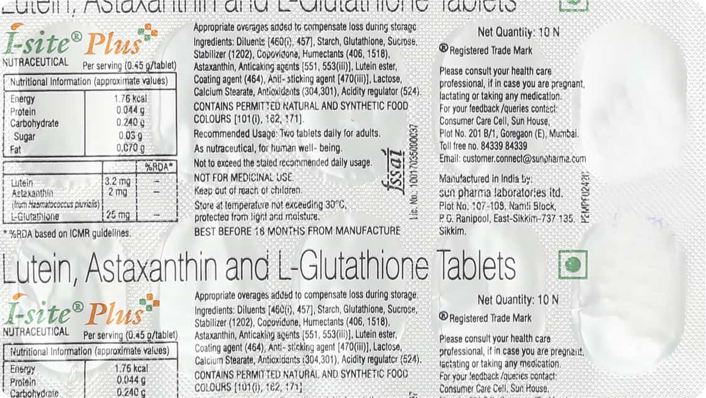
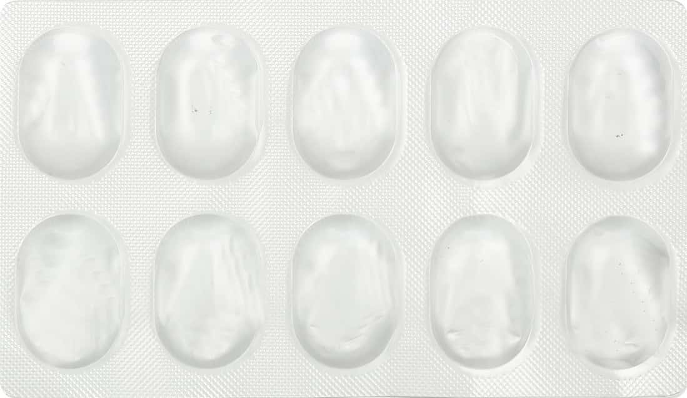

I-Site Plus is a nutritional supplement that contains lutein, astaxanthin, and l-glutathione. These ingredients are all antioxidants that can help to protect the eyes from damage.
Lutein is a carotenoid that is found in the macula of the eye. The macula is responsible for central vision, and lutein can help to protect it from damage caused by UV light and free radicals.
Astaxanthin is a carotenoid that is found in salmon, trout, and other fatty fish. It is a powerful antioxidant that can help to protect the eyes from damage caused by inflammation and UV light.
L-glutathione is a tripeptide that is found in all cells of the body. It is an important antioxidant that can help to protect cells from damage caused by free radicals.
I-Site Plus is a safe and effective way to help protect the eyes from damage. It is a good choice for people who are concerned about their eye health, or who have a family history of eye problems.
Take one capsule per day with food.
There are no known side effects of I-Site Plus.
Do not take I-Site Plus if you are pregnant or breastfeeding.
If you have any other medical conditions, consult your doctor before taking I-Site Plus.
Store I-Site Plus in a cool, dry place.

